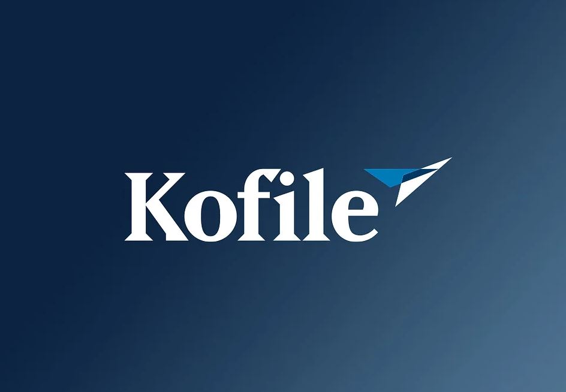
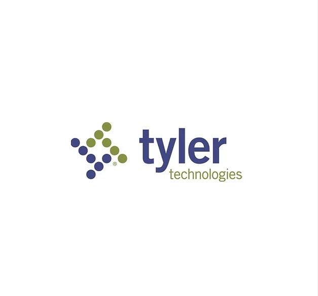
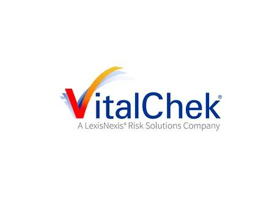
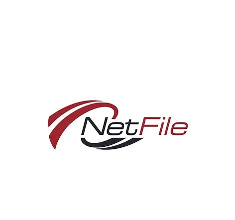
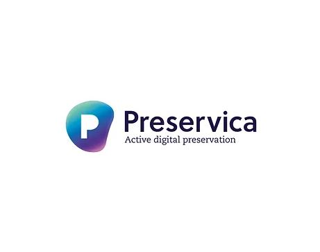
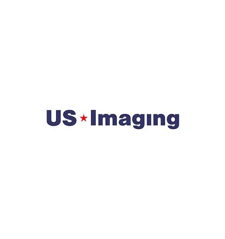

RISING ABOVE
Stronger, Better,Building Together
2023 County recorders' association of california
South Lake Tahoe, CA
WELCOME
Hello everyone, You are cordially invited to the 2023 Annual Conference for the County Recorders’ Association of California. We are honored to host this year’s event. We are sure you will find this conference to be educational, interesting, and beneficial. This year’s conference will take place from Tuesday, September 12th to Friday, September 15th. It will be held at the Harvey's Casino Exhibition Hall in the beautiful Sierra Nevada Mountains. Your participation will give you the opportunity to network with colleagues from other counties and to learn about new products and services from exhibitors.
Theme
The theme for the conference, Rising Above: Stronger, Better, Building Together, echoes our shared resilience in working through the many challenges we we face in the upcoming year. Learning, solving problems, and improving business processes are just part of it. At this year’s event we will take time to reflect, discuss strategies and solutions as we strive to build a better and stronger future.
Gold Sponsors
Kofile
We are the trusted partner for elected officials, department leaders, and those fighting to create a better community.
Tyler
Tyler’s broad solution and product offering empowers you to deliver better and faster assistance to the public — greater transparency and accessibility, sustainable office practices, secure data that's easy to manage and maintain, and faster results.
Vitalcheck
Start with our simple online form. We’ve been doing this for more than 35 years, so we have the expertise to get you through the process. You’ll find helpful hints on every form, and can always reach out to us if you need help.
Silver Sponsors
NetFile
NetFile is the top choice for California Government Agencies, Professional Treasurers, and Lobbyist Filers. NetFile’s agency platform supports all electronic and paper-filed forms in California. For our Professional Treasurer clients, NetFile also supports several other states, as well as FEC forms!
Preservica
Preservica is changing the way organizations around the world future-proof and access critical long-term digital information. Our unique active digital preservation software is helping organizations drive innovation, confidently meet compliance and legal requirements, and safeguard digital content of unique cultural and brand importance.
US Imaging
Instead of shipping your documents off-site, we come directly to you. We have helped hundreds of Counties digitize billions of historical pages without damage or loss. Our on-site team carefully scans your materials, using calibrated equipment specifically designed for each media type. By paying attention to details and doing things right the first time, you will enjoy immediate access to you documents with fewer illegible images